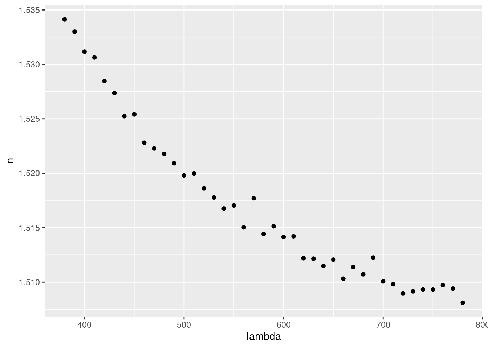

2.1 Planteamiento del problema: El prisma de vidrio
Newton demostró con el prisma que la luz blanca es una mezcla de varios colores y que la refracción depende del color (longitud de onda).
En un experimento, se eligieron diferentes longitudes de onda \(\lambda\) y se trazó el camino seguido por el rayo de luz que atraviesa el prisma, midiendo el ángulo de desviación para, a partir del mismo, calcular el índice de refracción \(n\) del vidrio para el color seleccionado.
Los datos obtenidos se recogen en el archivo refraction.csv (click para descargar), que contiene las variables:
lambda: longitud de onda \(\lambda\), medida en \(nm\).n: índice de refracción.
Descarga el fichero refraction.csv y guárdalo en una carpeta de nombre data dentro de tu directorio de trabajo.
Importamos los datos con read_csv() y los guardamos en un objeto de nombre refraction:
refraction <- read_csv("data/refraction.csv")Visualizamos los datos dibujando la nube de puntos \((\lambda, n)\) con geom_point():
ggplot(
data = refraction,
mapping = aes(x = lambda, y = n)
) +
geom_point()